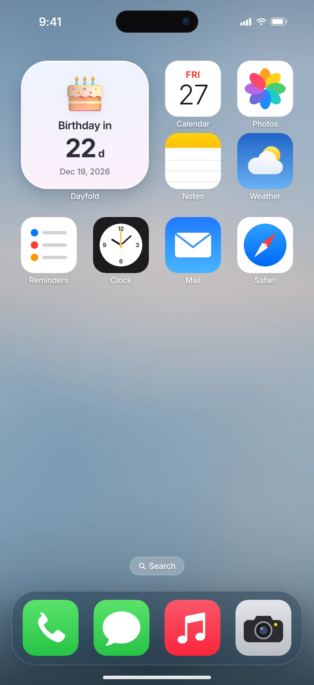

Count Down the Days Until a Birthday on iPhone
Dayfold counts the days until a birthday on your Home Screen or Lock Screen. Yearly repeat starts next year. Not days since a birth or days together.

Quick facts
| What you set | The birthday (a future date, or this year’s date if it is still ahead) |
|---|---|
| What you see | Days remaining — for example “Birthday in 22 d” |
| After the day | With yearly repeat on, the countdown starts again for next year |
| Not the same as | Baby age (days since birth) or days together (days since you met) |
| Widgets | Small or medium Home Screen; Lock Screen (monochrome tint) |
| System | iPhone, iOS 17.0 or later |
| Reminders | Optional; on-the-day, 30-day and 100-day reminders are free |
| Price | Free to download; four active moments free; Dayfold Pro is optional (monthly or one-time Lifetime) |
Days until the birthday — not days since
If you want a number you can glance at that says how long it is until a birthday, that is a countdown. In Dayfold you save the birthday as a Moment with a future date, and the widget shows how many days remain, such as “Birthday in 22 d” plus the date.
This is a different job from two other Dayfold guides:
- Baby age on an iPhone widget counts the days since a birth date (“Baby for 184 d”).
- Days together and anniversaries counts the days since you met, or counts down to an anniversary.
You can keep more than one of these at once. The free plan allows four active moments.
How to add a birthday countdown
- Download Dayfold and open it once, so iOS lists its widgets. Dayfold requires iOS 17.0 or later.
- Tap + to open Create a Moment.
- Name the moment (for example “Birthday” or a person’s name) and set Date to the upcoming birthday.
- Turn on Repeat if you want the countdown to return every year. Optional: mark it Primary if it should be the default widget, and set a reminder.
- Save and choose a card style. Emoji, Flip Calendar and Ticket are free.
- Home Screen: touch and hold the Home Screen, tap Edit, tap Add Widget, find Dayfold, and choose a small or medium widget. Tap the widget if you need to select this birthday Moment.
- Lock Screen (optional): touch and hold the Lock Screen, tap Customize, tap the area under the clock, choose Dayfold, then tap the widget and select this Moment. Step-by-step screenshots are in the Lock Screen countdown guide. The Lock Screen widget is monochrome; the full-color card stays on the Home Screen.

Open the app once after a restart if a widget shows a placeholder; iOS sometimes waits until the first unlock to refresh widgets.
Yearly repeat, after the birthday
Turn on yearly repeat when you create the Moment so you do not have to add a new date each year. When the birthday has passed, Dayfold starts the countdown again for the next one.
If you leave repeat off, the Moment becomes a days-since card after the date — the same “for N d” pattern used for other past dates. That is useful if you wanted a one-off party date rather than a birthday that returns.
You can also set an on-the-day reminder so you do not miss the morning. On-the-day, 30-day and 100-day reminders are free; advance reminders and extra milestones are part of Dayfold Pro.
Several birthdays at once
For a family, repeat steps 2–5 for each person. The free plan allows four active moments. If you need more than four at once, Dayfold Pro unlocks unlimited moments.
Free and optional Pro
Dayfold is free to download. No account is required, and Moment content stays on your iPhone (cloud sync is not available). Four active moments and three card styles are free. Dayfold Pro, as a monthly plan or a one-time Lifetime purchase, unlocks unlimited moments, every card and widget style, advance reminders and additional milestones.
FAQ
Can I put a birthday countdown on my iPhone?
Yes. In Dayfold, create a Moment for the upcoming birthday, then add a Home Screen or Lock Screen widget. The widget shows how many days remain. Dayfold requires iOS 17.0 or later.
Will the countdown repeat every year?
Yes. Turn on yearly repeat when you create the Moment. After the birthday passes, the countdown starts again for the next year, so you do not have to add a new date each time.
Is this the same as a baby-age or days-together widget?
No. This page is about days until a birthday. A baby-age moment counts the days since a birth date. A days-together moment counts the days since you met. You can keep more than one of these at once.
Can I add a birthday countdown to the Lock Screen?
Yes. After you save the Moment, touch and hold the Lock Screen, tap Customize, tap the area under the clock, and add Dayfold. iOS tints Lock Screen widgets so they appear monochrome; the full-color card is on the Home Screen. A longer walkthrough is in the Lock Screen countdown guide.
Is Dayfold free?
Yes. Dayfold is free to download. You can keep four active moments and use three card styles without paying. Dayfold Pro is an optional monthly plan or one-time Lifetime purchase.